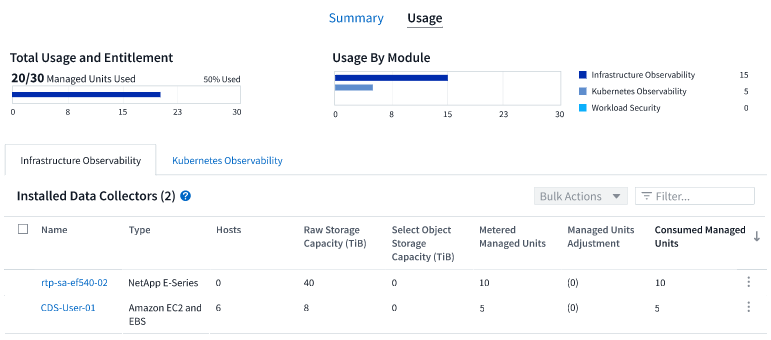
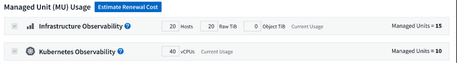
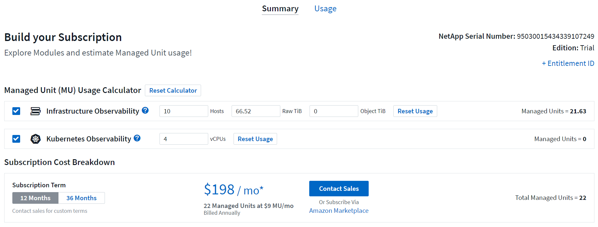
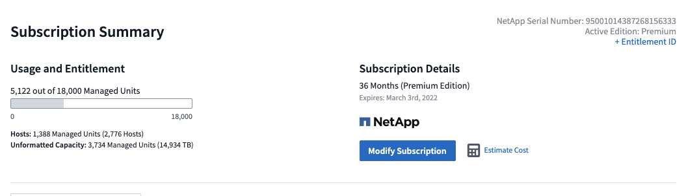

安全性
安全性
訂閱Cloud Insights 此功能
 建議變更
建議變更
使用效益只需三個簡單步驟、即可輕鬆開始使用Cloud Insights ：
-
請在上註冊帳戶 "* NetApp BlueXP*" 以存取所有NetApp雲端產品。
-
註冊以取得 "免費試用" 以探索可用的功能。Cloud Insights
-
*訂閱Cloud Insights *不中斷地透過存取您的資料 "NetApp銷售" 直接或 "AWS Marketplace"。
在登錄過程中、您可以選擇全球區域來裝載Cloud Insights 您的支援環境。如需詳細資訊、請參閱Cloud Insights 關於資訊 "資訊與地區"。

|
除非另有說明、否則本頁面上的資訊通常適用於 Cloud Insights 商業版。Cloud Insights 聯邦版可能不包含本頁所述的部分功能。 |
如需 Cloud Insights Basic 與 Premium 版本所提供功能的完整比較、請參閱 "Cloud Insights 定價" 頁面。

|
不活動Cloud Insights 的不活動版環境會被刪除、資源也會回收。如果連續30天沒有使用者活動、環境將視為非作用中、如果連續7天沒有擷取資料。在刪除環境之前、將會傳送通知並提供四天的寬限期。Cloud Insights |
使用Cloud Insights 時、如果看到掛鎖圖示 、表示您目前的版本無法使用此功能、或是以有限形式提供。升級以完整存取此功能。
試用版
當您註冊Cloud Insights 以供選擇使用時、您可以免費試用Cloud Insights 30天的VMware。在此試用期間、您可以在Cloud Insights 自己的環境中、探索VMware所提供的功能。
您可以在試用期間隨時訂閱Cloud Insights 。訂閱Cloud Insights 此功能可確保不中斷地存取您的資料、並延長資料存取時間 "產品支援" 選項：
當您的免費試用即將結束時、系統會顯示橫幅Cloud Insights該橫幅中有一個 View Subscription 連結、可開啟 * 管理 → Subscription* 頁面。非管理員使用者會看到橫幅、但無法前往「訂閱」頁面。
|
|
如果您需要更多時間來評估Cloud Insights VMware、而且您的試用期設定為4天或更短、您可以將試用期延長30天。您只能延長試用期一次。如果試用期已到期、您將無法延長試用期。 |
透過AWS Marketplace試用
您也可以透過AWS Marketplace註冊免費試用。AWS Marketplace 免費試用版可讓您存取 Cloud Insights 、試用期為 33 天、最多允許 499 天 託管單位 （MU）。
附註：如果您設定的MU超過499 MU、您將會進入「違反」狀態。當您的試用處於「外洩」狀態時、您將無法使用Cloud Insights 某些功能、直到資料外洩問題解決為止、無論是減少設定的MU數、或是訂閱Cloud Insights 了「不安全」。
AWS Marketplace免費試用版無法延長。您可以在試用期間隨時降級至 Cloud Insights Basic Edition 訂閱、或造訪 * 管理 → 訂閱 * 頁面、變更為付費 Cloud Insights 訂閱。
如果我的試用期已到期、該怎麼辦？
如果您的免費試用期已過期、但尚未訂閱Cloud Insights 、則在您訂閱之前、您的功能將受限。
模組試用
即將推出！
|
|
模組試用視為預覽功能、因此可能會有所變更。 |
除了 Cloud Insights 的初始試用之外、您也可以利用 * 模組試用 * 。例如、如果您已訂閱基礎架構可服務性、但正在將 Kubernetes 新增至您的環境、則從安裝 NetApp Kubernetes 監控操作員開始、您將自動進入 Kubernetes 可服務性的 30 天試用版。在試用期結束時、您只需支付 Kubernetes Observ易 受管理單元的使用費用。
|
|
請記住、在試用期過後、您將會被收取新的管理單元（ MU ）使用費用、因此請務必做好相應的規劃。當您的模組試用結束時、系統會通知您是否需要新增更多 MU 、以避免服務中斷。 |
您可以在 Usage 標籤的 Admin > Subscription 頁面上監控受管理單元的使用情況。

評估者
在模組試用期間、您不會變更用於模組之資源的 MU 使用量、 但您可以開啟 * 評估者 * （在 _ 摘要 _ 索引標籤上）、查看試用後 MU 的收費方式、以及使用「假設」情境、以及未來可能需要的 MU 數量。請離開 Estimator 以重設數字。

選取模組旁的核取方塊、即可從預估成本中新增或移除整個模組的 MU 。
您也可以使用 Estimator 來查看加載項目的編號堆疊方式、也就是保留目前訂閱期限並增加授權託管單位的數量、或是在目前訂閱時購買續約訂閱的續約選項 學期結束。
請注意、每次訂閱只能參加一次模組試用。
訂購選項
若要訂閱、請前往 * 管理 → 訂閱 * 。除了*訂閱*按鈕之外、您還能查看已安裝的資料收集器、並計算預估價格。對於典型環境、您可以按一下自助式 AWS Marketplace 按鈕。如果您的環境包含或預期包含1、000個以上的託管單位、您就有資格參加Volume Pricing。
定價
根據*管理單元*定價。Cloud Insights管理單元的使用量是根據基礎架構環境中*主機或虛擬機器*的數量、以及*未格式化容量*的管理量來計算。
-
1個受管理單元= 2個主機（任何虛擬或實體機器）
-
1受管理單元= 4 TiB的實體或虛擬磁碟未格式化容量
-
1 託管單元 = 40 TiB 的非格式化容量、適用於特定次要儲存設備： AWS S3 、 Cohesity SmartFiles 、 Dell EMC Data Domain 、 Dell EMC ECS 、 Hitachi Content Platform 、 IBM Cleversafe 、 NetApp StorageGRID 、 Rukrik 。
-
1 個託管單元 = 4 個 Kuberentes vCPU
如果您的環境包含或預期包含1、000個以上的託管單位、您就有資格享有* Volume Pricing *、系統將會提示您聯絡NetApp銷售人員以訂閱。請參閱 以下 以取得更多詳細資料。
預估您的訂閱成本
訂閱計算機可協助您根據所需的託管單元數量來估計 Cloud Insights 訂閱成本。目前的值會預先填入、您可以調整這些值、以協助您規劃未來的預估成長。您可以調整基礎架構、 Kubernetes 或兩者的值。
您的預估標價成本將根據訂閱期限而有所變動。
附註：計算器僅供評估之用。您的確切價格將在訂閱時設定。

如何訂閱？
如果您的託管單位數少於1、000、您可以透過NetApp銷售或訂閱 自行訂閱 透過AWS Marketplace。
透過NetApp銷售直接訂閱
如果您預期的託管單元數為1、000或更高、請按一下 "聯絡銷售人員" 按鈕、透過NetApp銷售團隊訂閱。
您必須提供Cloud Insights 您的資料*序號*給NetApp銷售代表、以便將付費訂閱套用Cloud Insights 至您的不實環境。序號可在Cloud Insights *管理>訂閱*頁面上找到您獨特的嘗試環境。
透過AWS Marketplace自行訂閱
|
|
您必須是帳戶擁有者或管理員、才能將AWS Marketplace訂閱套用至現有Cloud Insights 的VMware試用帳戶。此外、您必須擁有Amazon Web Services（AWS）帳戶。 |
按一下 Amazon Marketplace 連結即可開啟 AWS "Cloud Insights" 訂購頁面、您可以在其中完成訂購。請注意、您在計算機中輸入的值不會填入AWS訂閱頁面；您需要在此頁面上輸入管理單元總數。
在您輸入管理單元總數並選擇12個月或36個月的訂閱期限之後、請按一下*設定您的帳戶*以完成訂閱程序。
AWS訂購程序完成後、您將會被帶回Cloud Insights 您的作業系統環境。或者、如果環境不再處於作用中狀態（例如、您已登出）、您將會進入 NetApp BlueXP 登入頁面。當您再次登入Cloud Insights 時、您的訂閱將會啟用。
|
|
在AWS Marketplace頁面上按一下*設定您的帳戶*之後、您必須在一小時內完成AWS訂購程序。如果您未在一小時內完成、則必須再次按*設定帳戶*以完成程序。 |
如果發生問題且訂閱程序無法正確完成、您仍會在登入環境時看到「試用版」橫幅。在此情況下、您可以前往*管理>訂閱*、然後重複訂閱程序。
檢視您的訂閱狀態
一旦您的訂閱啟用、您就可以從*管理>訂閱*頁面檢視您的訂閱狀態和受管理單元使用量。
訂閱摘要索引標籤會顯示下列項目：
-
目前版本
-
訂閱序號
-
目前的 MU 使用量和「假設情況如何？」 成本估算工具
-
修改訂閱的連結
-
管理單元使用率檢視
檢視您的使用管理
使用管理索引標籤會顯示受管理單元使用率的概觀、以及依收集器或 Kubernetes 叢集區分受管理單元使用量的索引標籤。
|
|
「未格式化的容量管理單元」數會反映環境中總原始容量的總和、並四捨五入至最近的管理單元。 |
|
|
受管理單元的總和可能與摘要區段中的資料收集器數略有不同。這是因為託管單元的數量會四捨五入到最近的託管單元。「資料收集器」清單中這些數字的總和、可能會略高於「狀態」區段中的「受管理單元總數」。摘要區段會反映您訂閱的實際託管單位數。 |
如果您的使用量接近或超過您訂閱的數量、您可以刪除資料收集器或停止監控 Kubernetes 叢集、以減少使用量。按一下「三點」功能表並選取「刪除」、即可刪除此清單中的項目。
如果我超過訂閱使用量、會發生什麼情況？
當您的託管設備使用量超過80%、90%及100%的訂購總金額時、系統會顯示警告：
使用量超過： |
這種情況發生/建議採取的行動： |
* 80%* |
隨即顯示資訊橫幅。無需採取任何行動。 |
* 90%* |
隨即顯示警告橫幅。您可能想要增加訂閱的託管單元數。 |
* 100%* |
系統會顯示錯誤橫幅、您的功能有限、直到您執行下列其中一項操作為止： |
直接訂閱並跳過試用版
您也Cloud Insights 可以直接從訂閱 "AWS Marketplace"，而無需先建立試用環境。一旦您的訂閱完成並設定環境、您就會立即訂閱。
新增權益ID
如果您擁有與Cloud Insights NetApp搭售的有效NetApp產品、您可以將該產品序號新增至現有Cloud Insights 的版次訂閱。例如、如果您已購買NetApp Astra Control Center、則Astra Control Center授權序號可用於識別Cloud Insights 在《》中的訂閱內容。此為_權利ID _。Cloud Insights
若要新增權利ID至Cloud Insights 您的訂閱、請在*管理>訂閱*頁面上、按一下_+權利ID _。
